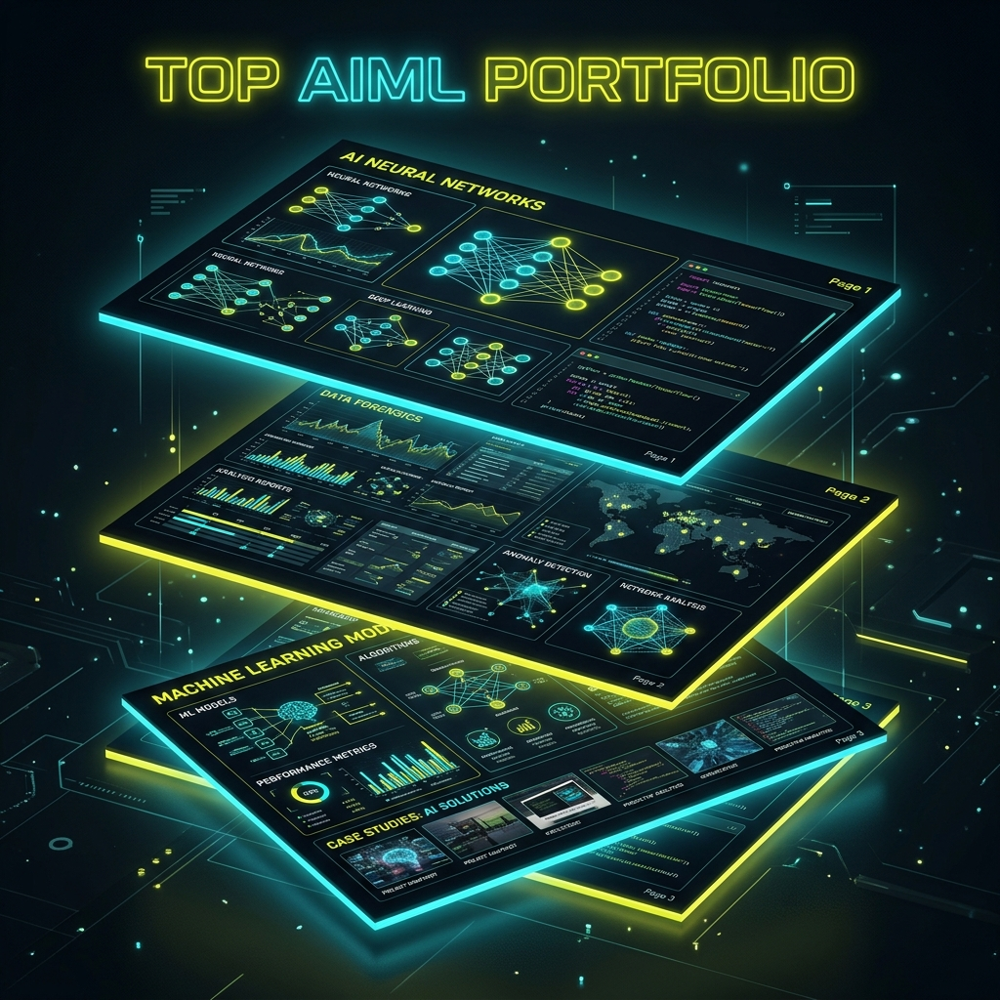

Initializing Sequence...
I build Intelligence
B.Tech AIML Student & Researcher
Bridging the gap between biological neural networks and artificial cognitive architectures.

About system.user
TATENDA BLESSING
FORENSIC SCIENTIST & AIML ENGINEER
WORK SUMMARY
Undergraduate Intern, 2024–Present
Xerbia- Actively contributing to full-stack AI development and software engineering projects.
- Applying theoretical machine learning concepts to real-world datasets in a professional consultancy environment.
- Developing modular code for intelligent automation systems and internal data visualization tools.
Forensic Scientist & AI Researcher, 2016–present
Forensic Analytical Consulting Services- Adhered to the laboratory's quality control policies, documented all quality control activities, and procedural calibrations.
- Developed deep learning paradigms extracting patterns from forensic evidence datasets with 94% structural accuracy.
- Pioneered simulation models decoding neurological electrical transmissions to understand antidepressant signal decay.
- Performed data recovery of active and deleted files in accordance with requests of submitting agencies.
Core Research Interests
Algorithmic Forensics
Developing advanced algorithms that intersect with forensic science. Using deep learning and computer vision to analyze complex crime scene data, trace digital footprints, and uncover patterns that traditional methodologies might overlook.
Neural Activity Analysis & Antidepressants
Researching the generation of computational models to read and analyze nerve impulses for individuals with depression. By decoding neurological electrical transmissions, we can better understand how antidepressants alter cognitive pathways and work towards generating highly-targeted, dynamic treatment simulations.
Technical Stack
Machine Learning
Languages
Tools & Analytics
Terminal Output (Projects)
Forensic Pattern Recognizer
A CNN-based model designed to analyze fragmented data from forensic evidence. Capable of classifying microscopic trace elements with 94% accuracy.
Nerve Impulse Simulator
Simulates the transmission of electrical impulses across synthetic synapses to visualize the hypothetical effects of various SSRI antidepressant formulations on signal decay.
Sentiment-Neurology Bridge
An NLP study comparing textual sentiment analysis of patient journals with public datasets of their EEG recordings during depressive episodes.